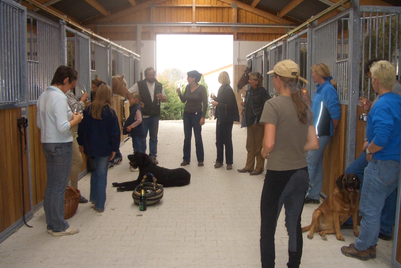
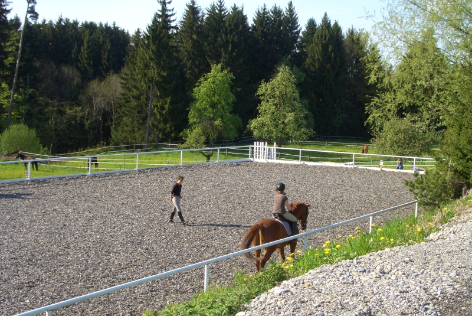
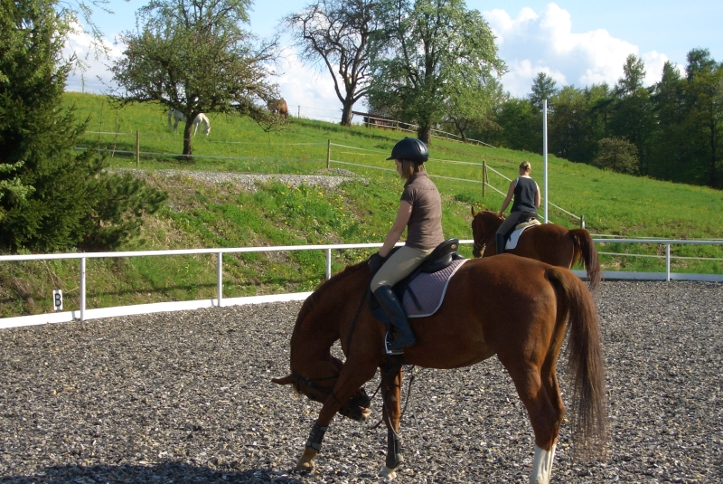
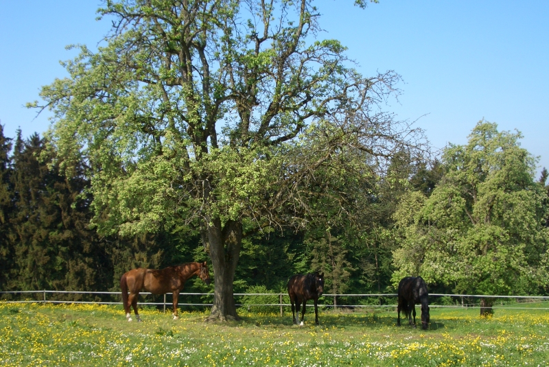

Im neuen Pferdestall (fertiggestellt Oktober 2006)
• 20 Pferdeboxen mit Aussenpaddocks
• Putz- und Anbindeplatz vor und hinter dem Stall
• Waschbox mit Solarium
• 2 Sattelkammern mit abschließbaren großen Schränken für jeden Reiter
• heller, gut belüfteter Stall mit breiter Stallgasse
• neues, gemütliches Reiterstüble mit Küche, Getränkeautomat und Toiletten
Im alten Gebäude
• 11 Pferdeboxen zum Teil mit Fenster
• Sattelkammer mit Reiterstüble
• Putz- und Waschplatz

Reithalle
• Unterhalb des neuen Pferdestalles
• Maße: 20m x 40m
• mit Beregnungsanlage ausgestattet
• komplett neuer Belag (Spezial-Sand) seit Juli/09
Reitplatz (fertiggestellt Frühjahr 2007)
• Ruhig gelegen, unterhalb der Reithalle
• Maße: 20 m x 40 m
• Ausgestattet mit div. Hindernissen und Flutlicht
• Belag: Swing Ground
- schont Gelenke und Sehnen Ihrer Pferde
- staubt nicht
- gefriert nicht
- läßt keine Pfützen entstehen
- ist umweltverträglich und ungiftig
- ist nach Jahren noch elastisch, trittsicher und griffig
• Reiten, das ganze Jahr hindurch, bei jeder Witterung!


Sommerweiden
• Ausgedehnte Graskoppeln direkt am Hof
• Je nach Wetter beginnt die Weidesaison Mitte/Ende April
• Mit Bäumen (z. T. mit Unterstand) zum Schutz vor Regen und zu viel Sonne
• Sicher mit breitem Elektroband eingezäunt
• Auf den Weiden stehen Tränkefässer oder Wassertonnen
• Durch die Größe von ca. 4 ha ist eine individuelle Gruppeneinteilung möglich (Wallach- und Stutenherde oder nach Absprache mit dem Pferdebesitzer auch einzeln)
• Die Pferde sind nach Möglichkeit den ganzen Tag auf der Weide (im Hochsommer kommen sie sehr früh morgens raus, und dafür früher wieder in den Stall, um den Insekten zu entkommen)

Die Lage
• Unsere Reitanlage liegt in herrlicher Natur zwischen Allgäuer Bergen und Bodensee
• Tobel ist ein kleiner Ortsteil oberhalb von Bösenreutin, das wiederum zur Gemeinde Sigmarszell gehört (in 5 Minuten ist Lindau und die Grenze nach Österreich zu erreichen)
• Schnelle Anreise aus dem benachbarten Vorarlberg, der Schweiz und Württemberg (Nähe A 96 Ausfahrt Sigmarszell und B 31 - siehe Anfahrtsskizze)
• Ausreitgelände in direkter Umgebung zum Reiterhof
• Je nach Zeit und Lust kleine Runden oder größere Ausreit-Touren ins Hinterland
• Immer in Mitten der herrlichen Natur des Bodensees und des Allgäus